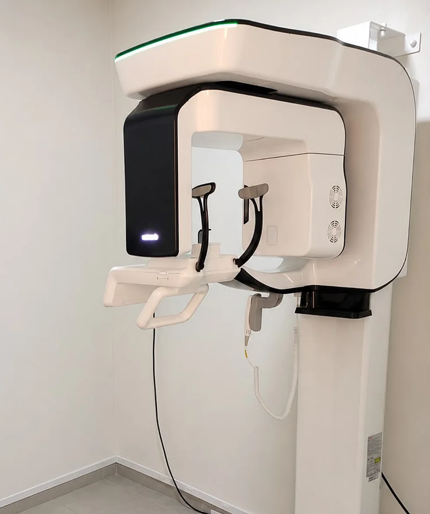
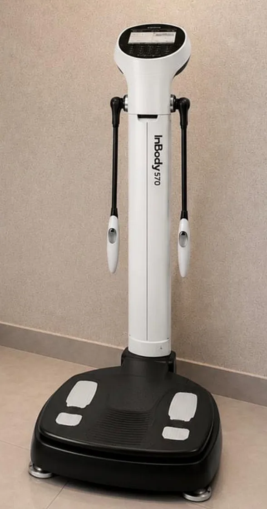

Dentista e nutricionista em Humaitá
Do check-up ao implante, com tomógrafo 3D e avaliação corporal InBody na própria clínica.
Agendar pelo WhatsAppDo check-up ao implante, com tomógrafo 3D e avaliação corporal InBody na própria clínica.
Agendar pelo WhatsApp
Imagens tridimensionais dos dentes e dos ossos da face para diagnóstico e planejamento.

Gordura corporal, massa muscular e água no organismo, por regiões do corpo.